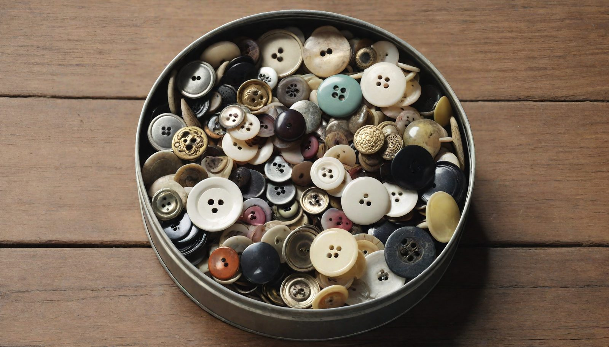

金曜までの1週間
店を閉めている火曜と水曜が、いちばん手を動かす日です。
- 土曜から月曜
店を開けながら、仕入れた服と買い取った服を分けます。傷みの強い物はここで外します。
- 火
全部洗います。綿は洗濯機、毛糸は手洗い。干すのは家の中の陰です。
- 水
乾いた服を1枚ずつ広げて、ほつれと穴、ボタンを見ます。縫える所はこの日に縫います。
- 木
ボタンを付け直して、アイロンをかけます。夜に毛玉を取ります。
- 金
平らに置いて寸法を測り、一覧を書きます。16時に店を閉めて並べ替え、17時に出します。
店でやっている事
洗い
綿の服は弱い洗剤で洗濯機に。毛糸は30度くらいのぬるま湯に中性洗剤で押し洗いして、タオルで水を取ります。乾燥機は使いません。
洗って取れない染みは無理に抜かず、場所を一覧に書きます。
ボタン付け
取れかけているボタンは付け直します。1つ無くなっている服は、缶から近い色と大きさを探して、合う物が無ければ全部を付け替えます。
付け替えた服は「直しあり」にして、何のボタンにしたかを書きます。

ほつれと穴
縫い目のほつれは同じ色の糸で縫い直します。小さな穴は裏から当て布をして、表から目立たないように縫います。
毛糸の穴は、近い色の毛糸ですくって閉じます。色が少し違う事があります。
毛玉とアイロン
毛玉は手で動かす毛玉取りで、生地を薄くしない程度に。アイロンは綿だけで、毛糸は蒸気を当てて形を整えるだけです。
やっていない事
- 裾上げと丈詰め
- 1人で洗いと直しをしていて、寸法を変える直しまでは手が回りません。ズボンの裾は長いまま出しています。横丁の入口に直しの店があるので、場所はお教えします。
- 袖や身幅の詰め
- 形が変わってしまうので、寸法の合う物を探してもらう方をすすめています。
- 強い薬での染み抜き
- 生地や色が傷むので使いません。残った染みは場所を書いて、その分値段を下げています。
家で洗う時
買った人によく聞かれる事です。
- ネルとデニム
- 裏返して洗濯機で。デニムはまだ少し色が出るので、白い物と分けてください。
- 毛糸の物
- ぬるま湯で押し洗い。干す時は平らに置いて、吊るさないでください。肩が伸びます。
- 綿のコート
- ふだんはブラシをかけるだけで足ります。洗うなら年に1回、手で。